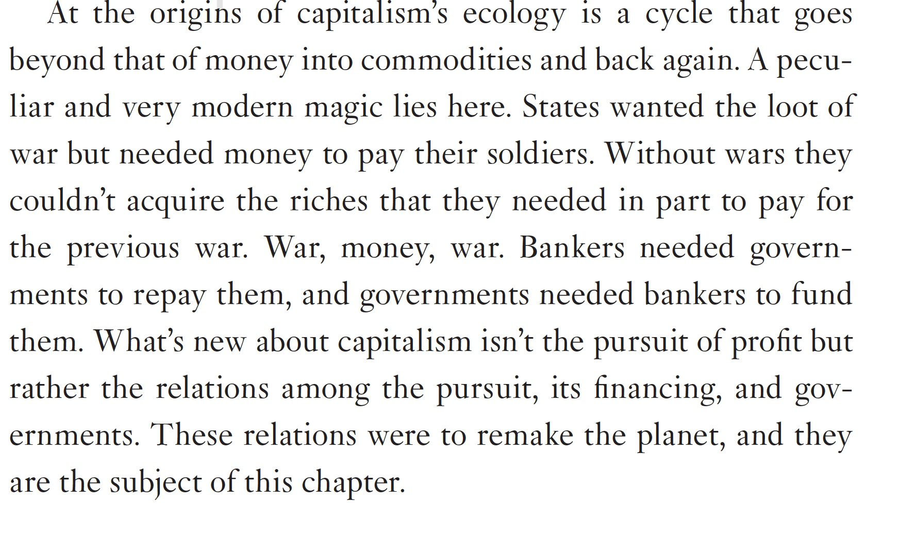

29 History of Capitalism
29.1 Monbiot
Capitalism was arguably born on a remote island. A few decades after the Portuguese colonised Madeira in 1420, they developed a system that differed in some respects from anything that had gone before. By felling the forests after which they named the island (madeira is Portuguese for wood), they created, in this uninhabited sphere, a blank slate – a terra nullius – in which a new economy could be built. Financed by bankers in Genoa and Flanders, they transported enslaved people from Africa to plant and process sugar. They developed an economy in which land, labour and money lost their previous social meaning and became tradable commodities.
As the geographer Jason Moore points out in the journal Review, a small amount of capital could be used, in these circumstances, to grab a vast amount of natural wealth. On Madeira’s rich soil, using the abundant wood as fuel, slave labour achieved a previously unimaginable productivity. In the 1470s, this tiny island became the world’s biggest producer of sugar.
Madeira’s economy also had another characteristic that distinguished it from what had gone before: the astonishing speed at which it worked through the island’s natural wealth. Sugar production peaked in 1506. By 1525 it had fallen by almost 80%. The major reason, Moore believes, was the exhaustion of accessible supplies of wood: Madeira ran out of madeira.
It took 60kg of wood to refine 1kg of sugar. As wood had to be cut from ever steeper and more remote parts of the island, more slave labour was needed to produce the same amount of sugar. In other words, the productivity of labour collapsed, falling roughly fourfold in 20 years. At about the same time, the forest clearing drove several endemic species to extinction.
In what was to become the classic boom-bust-quit cycle of capitalism, the Portuguese shifted their capital to new frontiers, establishing sugar plantations first on São Tomé, then in Brazil, then in the Caribbean, in each case depleting resources before moving on. As Moore says, the seizure, exhaustion and partial abandonment of new geographical frontiers is central to the model of accumulation that we call capitalism. Ecological and productivity crises like Madeira’s are not perverse outcomes of the system. They are the system.
Madeira soon moved on to other commodities, principally wine. It should come as no surprise that the island is now accused of functioning as a tax haven, and was mentioned in this week’s reporting of the Pandora papers. What else is an ecologically exhausted island, whose economy depended on looting, to do?
In Jane Eyre, published in 1847, Charlotte Brontë attempts to decontaminate Jane’s unexpected fortune. She inherited the money from her uncle, “Mr Eyre of Madeira”; but, St John Rivers informs her, it is now vested in “English funds”. This also has the effect of distancing her capital from Edward Rochester’s, tainted by its association with another depleted sugar island, Jamaica.
But what were, and are, English funds? England, in 1847, was at the centre of an empire whose capitalist endeavours had long eclipsed those of the Portuguese. For three centuries, it had systematically looted other nations: seizing people from Africa and forcing them to work in the Caribbean and North America, draining astonishing wealth from India, and extracting the materials it needed to power its Industrial Revolution through an indentured labour system often scarcely distinguishable from outright slavery. When Jane Eyre was published, Britain had recently concluded its first opium war against China.
Financing this system of world theft required new banking networks. These laid the foundations for the offshore financial system whose gruesome realities were again exposed this week. “English funds” were simply a destination for money made by the world-consuming colonial economy called capitalism.
In the onshoring of Jane’s money, we see the gulf between the reality of the system and the way it presents itself. Almost from the beginning of capitalism, attempts were made to sanitise it. Madeira’s early colonists created an origin myth, which claimed that the island was consumed by a wild fire, lasting for seven years, that cleared much of the forest. But there was no such natural disaster. The fires were set by people. The fire front we call capitalism burned across Madeira before the sparks jumped and set light to other parts of the world.
Capitalism’s fake history was formalised in 1689 by John Locke, in his Second Treatise of Government. “In the beginning all the world was America,” he tells us, a blank slate without people whose wealth was just sitting there, ready to be taken. But unlike Madeira, America was inhabited, and the indigenous people had to be killed or enslaved to create his terra nullius. The right to the world, he claimed, was established through hard work: when a man has “mixed his labour” with natural wealth, he “thereby makes it his property”. But those who laid claim to large amounts of natural wealth did not mix their own labour with it, but that of their slaves. The justifying fairytale capitalism tells about itself – you become rich through hard work and enterprise, adding value to natural wealth – is the greatest propaganda coup in human history.
As Laleh Khalili explains in the London Review of Books, the extractive colonial economy never ended. It continues through commodity traders working with kleptocrats and oligarchs, grabbing poor nations’ resources without payment with the help of clever instruments such as “transfer pricing”. It persists through the use of offshore tax havens and secrecy regimes by corrupt elites, who drain their nation’s wealth then channel it into “English funds”, whose true ownership is hidden by shell companies.
The fire front still rages across the world, burning through people and ecologies. Though the money that ignites it may be hidden, you can see it incinerating every territory that still possesses unexploited natural wealth: the Amazon, west Africa, West Papua. As capital runs out of planet to burn, it turns its attention to the deep ocean floor and starts speculating about shifting into space.
The local ecological disasters that began in Madeira are coalescing into a global one. We are recruited as both consumers and consumed, burning through our life support systems on behalf of oligarchs who keep their money and morality offshore.
When we see the same things happening in places thousands of miles apart, we should stop treating them as isolated phenomena, and recognise the pattern. All the talk of “taming” capitalism and “reforming” capitalism hinges on a mistaken idea of what it is. Capitalism is what we see in the Pandora papers.
29.2 Hickel
SMM: Less Is More includes a really fascinating section on the creation story of capitalism. The story is basically of peasants who threw off the rule of aristocrats and built egalitarian communes that also were quite animistic, with an ecologically-minded relationship to non-human (or your great phrase “more-than-human”) life. Rulers invented capitalism to basically extract more from the peasant communities and compel farmers to extract more from the land. The takeaway seems to be that in the absence of such psychopathic aristocrats and autocrats, people generally self-organize into more or less eco-anarchist democracies. There are many examples of Indigenous societies incorporating social tools to maintain democratic politics and prevent wealth and power hoarders from taking over. Are there practical mechanisms (that you didn’t include in Less Is More) that you’d point to for achieving such enviable accountability in modern fossil states, or do we just need to hope for collapses and fragmentation?
JH: It’s worth remembering that the ecological ontologies that characterize many Indigenous communities today are not some kind of timeless trait. They have been formulated in response to capitalism. In most cases these communities, or their ancestors, have had first-hand experience of the violence of colonial capital. They know how destructive it is, to both humans and ecologies, especially on the frontiers of the world-system. Consider the devastation wrought by the European invasion of the Americas, which wiped out 90% of the population and turned vast tracts of land into plantation monoculture and strip mines. That’s the context here. Indigenous communities have seen apocalypse up close, and their ontologies have been formed accordingly, with an acute awareness of the values that are required if we are to thrive together on this planet.
For the first 400 years of its history, capitalism caused immiseration virtually everywhere it went: enclosure, dispossession, genocide, mass enslavement, colonization, famine. It wasn’t until 1870 that we began to see any improvement in life expectancy in Europe, and that was the product of the labour movement and related struggles for democracy, municipal socialism, and basic interventions like public sanitation, public housing, and public healthcare. We don’t see improvement in the global South until progressive movements succeed in achieving decolonization. This history is important, because it reveals that what’s required for progress isn’t growth as such (as in, an aggregate expansion in the commodity economy), but rather a fair distribution of income and opportunity, and access to universal public goods. It’s not rocket science, but it does require a political struggle. So one might say that degrowth redefines progress. The goal is to achieve well-being for all, in balance with the Earth’s ecosystems, and any step we take in this direction (i.e., degrowth) represents progress.
29.3 Pre-History
29.3.1 Military Capitalism

29.3.2 Slavery
Colgan
As norms and laws changed in the eighteenth and nineteenth centuries to prohibit the slave trade, and eventually, slavery itself, the value of slaves as an asset declined toward zero. Slave owners bene- fited materially from slaves’ labor, but this practice weighed heavily on the con- science of abolitionists. In Britain, Parliament compensated slave owners when it abolished slavery, while in the United States bargaining failures led to a civil war (although compensation occurred in slave-holding states that remained loyal to the Union).
Colgan (2020) Asset Revaluation and the Existential Politics of Climate Change (pdf)
Francis
Economists dislike the idea that slavery facilitated growth in the American South because the foundation of their faith is that FREEDOM leads to GROWTH, which is GOOD. Consequently, the idea that SLAVERY led to GROWTH produces a lot of cognitive dissonance.
29.4 Corporations
On September 24, 1599, not far from where Shakespeare was struggling to finish Hamlet, the first corporation with tradable shares was born. Liberalism’s fatal hypocrisy was to celebrate the virtuous neighborhood butchers, bakers, and brewers in order to defend all the East India Companies that have since made a mockery of freedom.
Confronting rentier capitalism and fashioning firms for which social responsibility is more than a marketing ploy requires nothing less than re-writing corporate law. To recognize the scale of the undertaking, it helps to return to the moment in history when tradable shares weaponized capitalism, and to ask ourselves: Are we ready to correct that “error”?
The moment occurred on September 24, 1599. In a timbered building off Moorgate Fields, not far from where Shakespeare was struggling to complete Hamlet, a new type of company was founded. Its ownership of the new firm, called the East India Company, was sliced into tiny pieces to be bought and sold freely.Tradable shares allowed private corporations to become larger and more powerful than states. Liberalism’s fatal hypocrisy was to celebrate the virtuous neighborhood butchers, bakers, and brewers in order to defend the worst enemies of free markets: the East India Companies that know no community, respect no moral sentiments, fix prices, gobble up competitors, corrupt governments, and make a mockery of freedom.Then, toward the end of the nineteenth century, as the first networked mega-companies – including Edison, General Electric, and Bell – were formed, the genie released by marketable shares went a step further. Because neither banks nor investors had enough money to plough into the networked mega-firms, the mega-bank emerged in the form of a global cartel of banks and shadowy funds, each with its own shareholders.Unprecedented new debt was thus created to transfer value to the present, in the hope of profiting sufficiently to repay the future. Mega-finance, mega-equity, mega-pension funds, and mega-financial crises were the logical outcome. The crashes of 1929 and 2008, the unstoppable rise of Big Tech, and all the other ingredients of today’s discontent with capitalism, became inescapable.In this system, calls for a gentler capitalism are mere fads – especially in the post-2008 reality, which confirmed the total control over society by mega-firms and mega-banks. Unless we are willing to ban tradable shares, first introduced in 1599, we will make no appreciable difference to the distribution of wealth and power today. To imagine what transcending capitalism might mean in practice requires rethinking the ownership of corporations.
29.5 Compensation to Slave Owners
When the United Kingdom abolished slavery, the government compensated slave owners for the value lost from freeing enslaved people. The Bank of England only recently paid off these debts.
In 1834, the British government outlawed slavery in Britain and its American possessions, though not in its Asian colonies such as British India and what would become Sri Lanka.
The British government also paid 20 million pounds – the equivalent of around 17 billion pounds today – to compensate slave owners for the lost capital associated with freeing slaves. This payout was a massive 40% of the government’s budget and required many bonds to slave owners to effectuate the law. These obligations to slave owners and institutions are the debts that were paid off by the UK government only in 2015.
While the British government hasn’t disclosed a complete list of the recipient individuals and firms of bonds related to compensation for slaves, researchers at University College London have compiled a list of over 46,000 current individuals and groups who have received government payouts related to the abolition of slavery. Many powerful British families, including current business and political elites in the United Kingdom, are among the recipients uncovered by the UCL team.
Yet not all recipients were already wealthy or became so due to the payouts; UCL records show many middle-class Britons also benefited from the bonds.
Britain stood out among European states in its willingness to appease slave owners, and to burden future generations of its citizens with the responsibility of paying for it. Recently, economists and political scientists have debated whether the payouts were necessary for the successful abolition of slavery, some arguing that political will would have been better used to compensate Black slaves instead.
29.6 World System Theory
** Arrighi, Braudel, Wallerstein -Brenner **
Reifer
Bob Brenner (1977, 1981) is of course one of the leading critics of world-system analysis, which Brenner early on criticized as a form of “neo-Smithian Marxism.” His work on the origins of capitalist development later gave rise to the so-called Brenner debate (Aston & Philpin, 1987). In many ways, in terms of their analysis of the origins of capitalist development, Arrighi and Brenner could not be further apart. The burden of Brenner’s critique of Wallerstein’s world-system perspective was largely to focus on the centrality of class relations and the class struggle in agriculture, to the exclusion of virtually everything else, locating the origins of capitalist development in the English countryside. In contrast, Wallerstein and Arrighi both locate the origins of capitalism in the context of an expanding world-system, tied together by a single division of labor, one which transgresses the territorial boundaries of individual nation-states.
In contrast, Braudel’s version of capitalist history, following Oliver Cox (1959), located capitalism on the top level of world trade and high finance – and only to a lesser extent in industry – and that is the position to which Arrighi largely adhered.